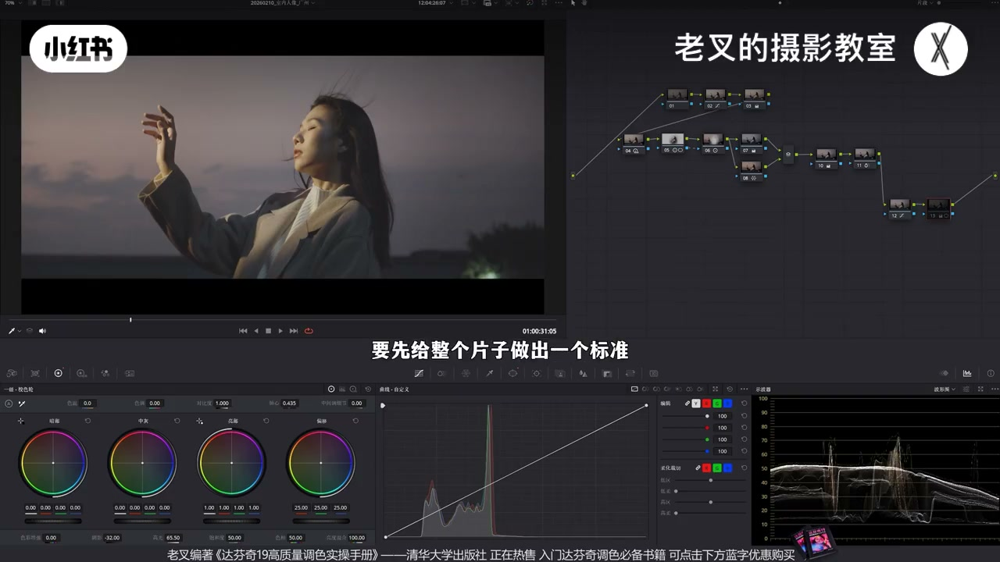
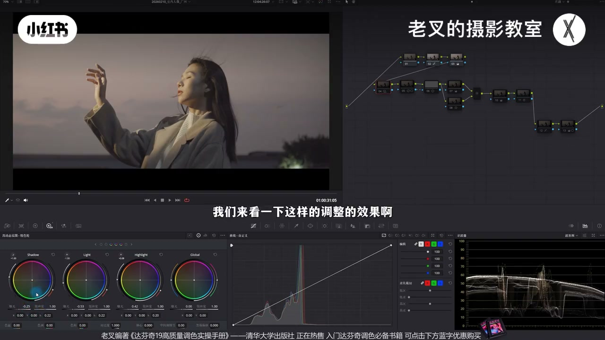
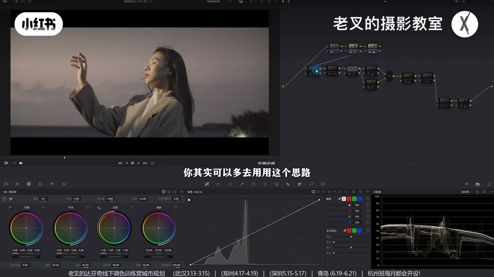
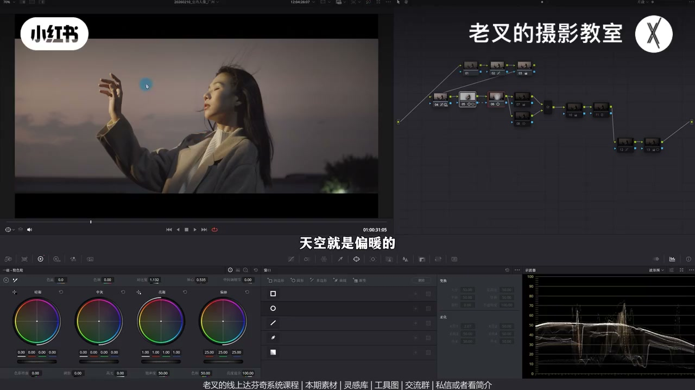
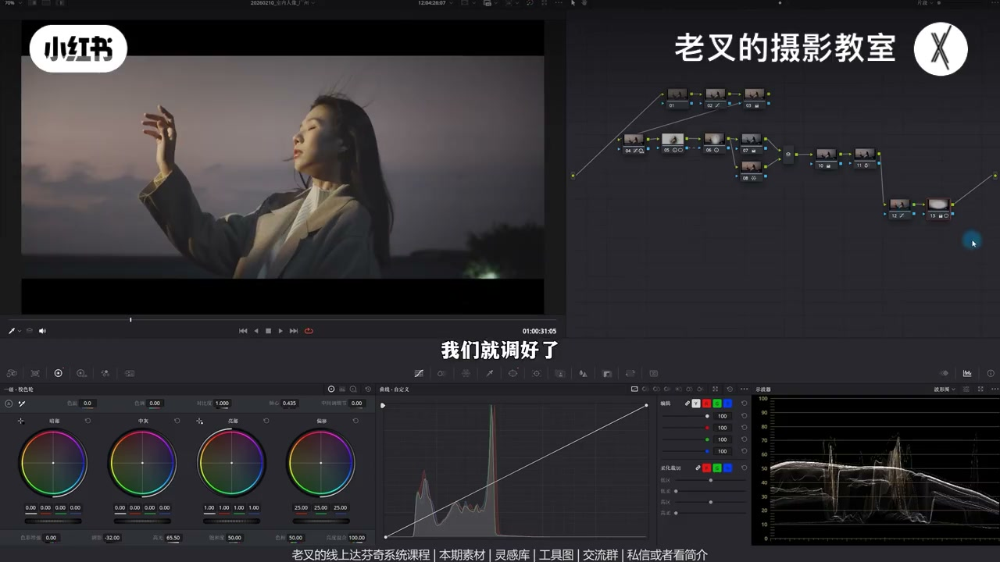
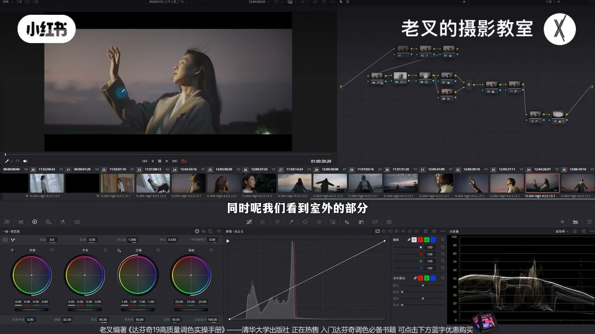

内容要点
老叉用小明同学新拍短片讲夕阳 vlog：难点是多场景统一与夕阳氛围。先挑代表性镜头做整片标准，弱光还原勿过亮；再用 HDR 展脸部层次，并大胆压本该看不见的暗区。人物遮罩加对比、外部压环境塑造主次；并行加蓝再回调暖，让整体暖而暗部带蓝。异场景匹配主镜头的明暗反差与冷暖落点，避免单镜跳脱。
知识结构
先挑代表镜；弱光勿过亮；曲线护高光展反差；还原≈70%。
压 Light、抬 Highlight（可压 Shadow）；对比全局降曝光会丢脸光感。
夕阳质感靠压看不见区域；人物遮罩加对比+外部压环境。
并行加蓝找回暖；可再偏暖；切片控蓝与肤明度；暗部微灰/暗角可选。
同场景微调还原；异场景对齐明暗反差与冷暖落点，勿单镜过亮跳脱。
夕阳片先定一镜标准再铺全片。还原尊重弱光；质感来自层次与「敢压」；颜色在已有晚霞暖上补暗部冷。多场景求观感一致，优先匹配反差与冷暖，而非硬统一固有色。
00:00-02:00立标准：弱光还原做到位约七成
开年短片氛围不错，难点是不同场景统一与夕阳氛围塑造。场景变化大时，先找最好看、最具代表或涵盖情况最多的一镜做整片标准。
该时段光照弱，还原考虑真实情况，不能特亮；想人物与背景都特清楚往往不舒服。曲线可让脸亮于天、护高光并展反差。练习时可刻意多练还原——到位约完成70%。实录与素材在分享平台。

02:00-03:32向光脸：HDR 拉开受光层次
脸向光时要避免层次太弱：降 Light、抬 Highlight，并视全局决定是否降 Shadow。放大看脸：受光面层次拉开，不会亮成一片，灰面更多，氛围更明确。
与全局降曝光不同：以云为参考全局压暗时，拉到脸上会丢光感发灰，天也变暗；以天为准略亮则脸仍平、暗面发灰。大光比场景多用此 HDR 思路。

03:32-04:36强化夕阳：敢压 + 人物/环境分区
人物仍偏灰时，强化夕阳质感「压暗」很重要。手机直出常自动让每区都清晰，层次与氛围就没了；夕阳光弱必然有许多看不见处，后期不压就成手机味。
五号节点人物遮罩加对比并轴心略左（增反差且略提亮）；Alt/Option+O 外部节点同样加对比但轴心右移压环境。主次明暗拉开，不做对比时遮罩痕迹不易见。

04:36-06:00颜色：暗部补蓝，整体仍偏暖
天空已偏暖晚霞，但暗部缺蓝、层次弱。并行：上节点降温略减色调加蓝，下节点向量找回暖饱和——有冷有暖。若希望整体总偏暖，后再弱加暖强化暖部。
蓝太多可降蓝饱和，或切片增青蓝密度压暗云；降肤色密度可提明度。曲线提高低区/低柔让暗部微灰；暗角可选。


06:00-07:56其他镜头：匹配反差与冷暖，不求假统一
同场景曝光略差，微调还原即可。异场景（如白天室内）差别大：主镜头是夕阳，辅助镜要匹配观感——场景不同颜色必然不同，只能让明暗反差尽量一致，并找到暖（肤、木凳）与冷（环境）落点。
不能无故让某镜特别跳脱。工程与素材已上传，非商用可练。调色要有明确目的；还原已舒服就可停。

完整转录（231段）
以下文本由 Whisper medium 模型自动转录，可能存在少量识别误差，已尽可能修正。
各位新年好,应该都复工了吧
新的一年也祝大家顺顺利利开开心心的
这一期是26年农历新年的第一期视频
我们用一组小没东西新拍的短片
来作为今年视频的开场
我们可以先看一下
整体的氛围感还是非常不错的对吧
这一组片子有两个调色的难点
一个是不同场景的统一
另一个就是西洋的氛围塑造
素材我已经传到了
线上分享频道上面的网站
还有各种各样的配合
我们先来看一下
我们先来看一下
我们先来看一下
我们先来看一下
我们先来看一下
我们先来看一下
我们先来看一下
我们先来看一下
我们先来看一下
素材我已经传到了
线上分享平台全程调色实录
我也一起传了大家可以一会去看看
我们在调这种场景变化
比较大的片子的时候
一定要先找到你认为最好看
或者最具有代表性
或者涵盖最多种情况的画面
要先给整个片子做出一个标准
我挑选的就是这个画面
我们要怎么让它从这样变成这样呢
其实很简单
首先我们还是还原
这种时间段的素材光照一定是非常弱的
这个时候要考虑真实光照情况
你不能把它做特别亮
你如果说想要让人物有足够的亮
背景中它这些内容也能看得清的话
你像这样的一个情况它就一定是不舒服的
差不多到这个程度就可以了
我这里选择这个曲线的方式
是因为人物的脸是要亮于天空的
这样的曲线可以保护高光不会太亮的同时
还能够有效的展开反差
这个我在之前讲过很多次了
就不重复了
怎么做的大家其实可以看实录
然后再给它加一点饱和度
在练习调色的时候其实可以刻意的多去练习一下还原
你会发现还原做到位了
你的画面基本上就已经完成70%了
然后呢就是精细化调整
当我们看到人物的脸
它是向光的时候就一定要小心
要避免它脸部的层次太弱
就算你当下还好
我也建议大家做一做这个行为
也就是降低Light色轮的曝光
再提高Highlight色轮的曝光
然后呢根据全局的效果来考虑
是否要降低Shadow色轮的曝光
我们来看一下这样的调整的效果
这是调整前这是调整后
我们仔细放大看脸
这样的操作它最大的一个好处就是
可以让脸部的瘦光面它的层次拉开
它就不会出现脸上
亮成一片的结果
你会发现这里出现了更多的灰面
同时呢因为我们稍微降低了点Shadow色轮
所以整体的氛围感也能够更加明确
那有些朋友会说你这跟全局一样
有什么区别不一样的啊
我们可以抓取一个竞争
然后把这个节点隐藏了
再来一个节点把刚刚抓的竞争给它
我们可以先以天空的云作为参考
我们给全局降低点曝光
此时云的曝光差不多了
但是我们把这个
分界线拉到人物脸上的时候
你会发现左侧用全局
曝光降低的这个行为会导致脸上的
光感失去了
脸不就发灰了吗这不舒服
同时天空部分也会变暗
如果说我们以天空部分作为
曝光的参考依据稍微让它亮一点
此时我们看到脸
人物的脸依旧是层次偏弱的
而且像这些暗面
左边是用色轮调整的这个行为
它的暗面会发灰
这个效果就是不舒服的
所以我建议大家特别是你在大周五
拍摄的时候你其实可以多去用
用这个思路效果其实还是非常好的
再往下我觉得人物反差目前
还是有点弱有点发灰
大家要注意的一个点就是你想要强化
夕阳的质感夜暗是非常重要的
我们要先明白为什么你拍出来
夕阳没有质感或者说直出的画面
没有质感很多时候我们比如说用手机
拍摄它会自动调整曝光尽可能
让画面中每一个区域都清晰
可见这样就会导致画面没有
层次对吧没有层次就没有
氛围因为夕阳光照弱就
必然会有非常多的地方是看不
见的那如果说你在后期调色
的时候没有去压那些本该压
的内容你就会出现像手机
拍的那个结果那自然就是不好看
的所以我们一定要做好强化我在五号
节点的先给人物去画了一个遮罩
然后给他增加对比度
增加对比的同时稍微向左移动点
轴心让他能够增加反差
还能够稍微体谅一点然后呢
我又按住L2加O或者是Option加
O建立了一个外部节点同样是
增加对比度不过是向右移动
轴心这样可以让环境暗一点这样
的组合就能够让画面整体
增加反差的同时
还能够塑造人物与环境的明暗
区别啊你这种调整你如果不
做对比的话你是不太容易看到遮罩痕迹
的啊再然后就是颜色虽然这个
场景拍摄的时候天空就是
偏暖的有这种晚霞对吧但是
我个人还是觉得整体的颜色层次
有点弱也就是他的暗部缺了点蓝
那所以呢我建立了一个并行节点
在7号节点中给画面先整体
加一点点蓝也就是减了色温
又减了一点点色调然后再在下面
这个节点中用蜘蛛网把
暖色部分的薄度给他找回来
那这样呢我们画面中就既
有冷也有暖了效果
还挺好的对吧但是我还是希望他
整体能够总暖掉所以呢我们可以在后面
再来一个节点在已经有
冷与暖的颜色的基础上
我们可以再给他稍微往暖的方向走
一点点让他把暖的部分
强化的更加明显我们可以把这
三个节点一起来开关看看这个区别
你会发现画面在保持
整体是暖的前提下暗部能够
带上一点点蓝那这样的颜色
就有层次了对吧那当然你如果
觉得蓝色太多的话你稍微降低点蓝色
薄度也可以或者像我一样在后面
加一个节点用四轮六十按切片工具
增加青色和蓝色密度
让他这些蓝背景中这一部分的
云让他暗一点下来这样也可以
也可以稍微降低点肤色的密度
来让肤色稍微提亮
一点你看到降低了密度是
可以提高他的明度的最后呢
我在12号节点用曲线右下角
这个面板中稍微提高了点
低区和低柔可以让他的
暗部带上一点点发挥的效果
也可以给画面加一个暗角
那当然这个暗角你可加可不加
完全看你自己的一个需求那这样呢我们就
调好了我们再次与还原后的画面
做一下对比这是还原后的画面
这是我们调后的画面不是说
还原后的画面就不好看啊因为我们
还原做的足够到位了就像我一开始
说的你还原做的到位了你就完成了
70%的调色如果你觉得
还有哪里不舒服的你再往下
做如果你觉得还原后就不错了
那就是不错了调色一定是有明确
目的的那当我们调完了这一个
画面之后呢其他的画面该怎么去
调同场景我们发现这里几个
同场景呢要去调还是比较容易的
虽然他们曝光会有一点点区别
但问题不大稍微微调一下还原就
行了那这几个不同场景的该怎么
办这里有白天的室内对吧这个场景
差别可太大了我们刚刚已经明确了
重要的镜头是夕阳十分
那么我们其他几个辅助镜头
也要去匹配这个效果让观感一致
匹配什么呢场景不同你
导致颜色必然是不一样的那就
只能让明暗反差尽可能一致
比如说这个镜头你不可能把它
调的这么亮对吧倒也不是说这么
亮它不好看也挺好看的
但是你作为一个完整
片子中的组成部分除了你有特殊
目的以外不然的话你不能让某一个镜头
特别跳脱所以我们要让它暗一点目的
就是为了能够让它跟后面这些镜头
衔接的是相对来讲比较
舒服同时我们看到室外
的部分我们是暗部偏冷掉
高光也就是夕阳它是走暖
掉的对吧所以我们在这种场景中也
要把冷与暖去找好暖
可以是谁暖就是皮肤对吧
包括这里还有这个木质的凳子
可以是暖而冷就由环境
来塑造具体的操作大家可以去看
实录我就不在这里多说了
私信或者看我直接就可以找到现场分享平台
素材是免费给大家分享的还是那句话
只要你不商用你这个素材想拿
去干嘛都可以我在上传的时候已经
把这个工程同步上传了也就是
剪辑好的这个时间线大家可以领取
练练手还有达芬吉的线上系统课程
和线下调色训练营临近的几期班
快爆满了大家
如果有需要线下学习或者是
当面交流的话千万别错过了
直到这里如果你觉得你有帮助的话还希望
多多赞联好了这局就到这里
886